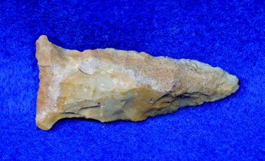
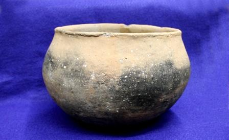
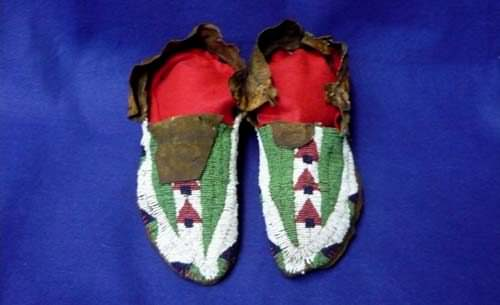
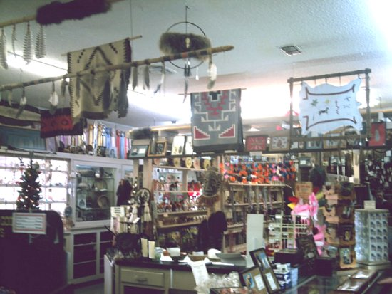

Caddo Trading Company
A collector’s eye.
A personal
connection.
Native American artifacts, a fascination with history, and someone you can actually talk to. Welcome to Sam Johnson’s Caddo Trading Company.
Based at Ka-Do-Ha Indian Village · Murfreesboro, Arkansas


A few pieces that have passed through our hands.
Shown for reference; these pieces have sold.
01 Shop current finds
02 Explore the archive
03 Talk with Sam
The shop · Caddoman on eBay
Your next find
starts here.
Browse our current eBay listings for photographs, descriptions, prices, and availability. When something catches your eye, you can purchase it directly on eBay.
Looking for a particular piece, or have a question about an older catalog entry? Give Sam a call.
Worth a closer look
The collection, over the years.
Original photographs and catalogs are part of the Caddo Trading story. Explore them by interest, with current availability confirmed directly with Sam.

Points & blades

Pottery & vessels

Beads & beaded pieces
These are historical catalog photographs, not a live inventory feed. For items available to buy now, visit Caddoman on eBay.

Experience, in person
Have a piece
you’d like to understand?
Sam offers artifact certification and appraisal services, with a particular interest in Caddoan ceramics. Start with a conversation about your piece and the information you have.
-
01
Get in touch
Call or email Sam to discuss the artifact.
-
02
Agree on the details
Confirm the current fee, submission process, and timing before sending anything.
-
03
Discuss certification
Ask about a certificate, an accompanying appraisal, or display options.
Make a day of discovery
Come on out
to Ka-Do-Ha.
Find Caddo Trading Company at Ka-Do-Ha Indian Village in Murfreesboro. Explore the museum and archaeological site, visit the trading post, and take a closer look at the area’s history.
Planning to meet Sam? Call ahead for an appointment—he’s often in and out. We can also confirm museum hours, admission, and group visits.
281 Kadoha RoadMurfreesboro, Arkansas 71958

look a little closer.
Museum · Trading post
Murfreesboro, Arkansas
Before you explore
A few useful
details.
Where do I buy an artifact?
Our current online listings are in the Caddoman eBay store. See each listing for its price, condition, shipping, returns, and checkout. For other inquiries, call Sam at (870) 285-3736.
Are the original catalog items still available?
The original catalogs contain both older listings and sold pieces. The Museum Quality collection is an archive of pieces already sold. Contact Sam with the item number or a link to confirm any other item’s availability.
How much does certification cost?
Please contact Sam for current fees and submission instructions. Older prices appear on the original website; confirm the details before arranging an appraisal or mailing an artifact.
Can I stop by to meet Sam?
Yes—please call ahead to arrange a time. Sam’s original website asks visitors to make an appointment because he is often in and out. Call for current museum hours and admission, too.
Talk to Sam
A real conversation
is a good place to start.
Sam Johnson · Caddo Trading Co., Inc.